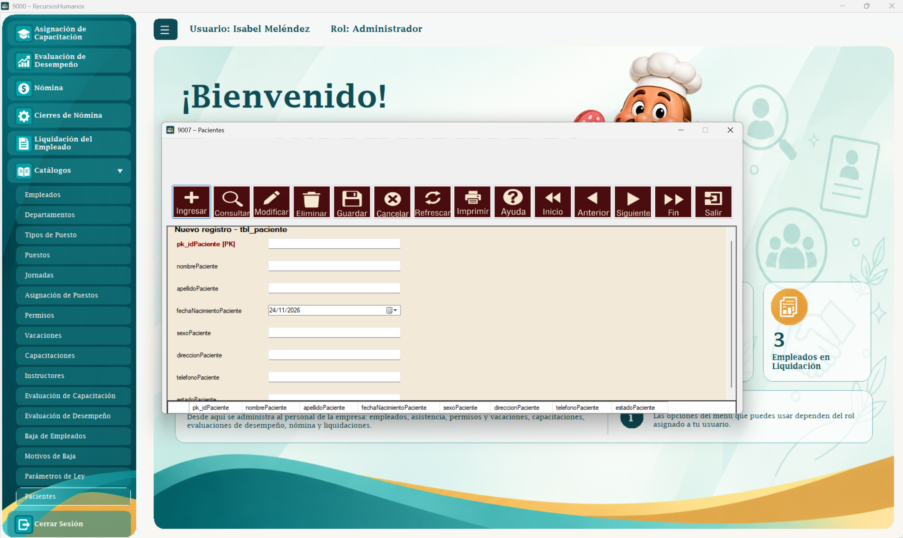

En esta ventana se registran los pacientes. Se abre desde el menú Catálogos, en la opción Pacientes.

Presione Ingresar y llene todos los campos: nombre, apellido, fecha de nacimiento, sexo, dirección, teléfono y estado. Luego presione Guardar.
Para cambiar un paciente, selecciónelo en la tabla, cambie los datos y presione Modificar. Para quitarlo, selecciónelo y presione Eliminar.
Con los botones Inicio, Anterior, Siguiente y Fin se mueve entre los registros, y con Consultar busca un paciente.
El botón Imprimir abre el reporte con el listado de pacientes.